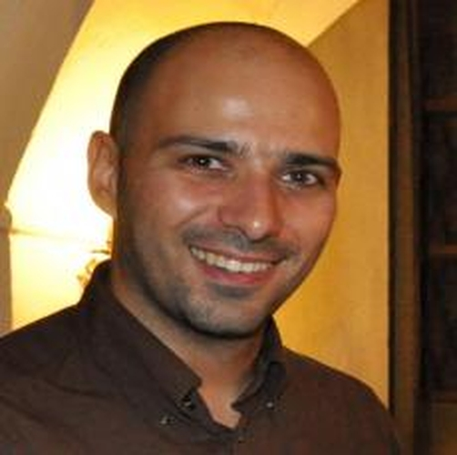

Organizing Committee
 |
 |
 |
| Andrea Agiollo (Primary contact) | Enkeleda Bardhi (Primary contact) | Paolo Bellavista |
| TU Delft, The Netherlands | TU Delft, The Netherlands | University of Bologna, Italy |
| 📧 A.Agiollo-1@tudelft.nl | 📧 E.Bardhi-1@tudelft.nl | 📧 paolo.bellavista@unibo.it |
|  | ||
| Rajiv Khanna | Riccardo Lazzeretti | |
| Purdue University, Indiana, USA | Sapienza University of Rome, Italy | |
| 📧 rajivak@purdue.edu | 📧 lazzeretti@diag.uniroma1.it |
Keynote
| Giuseppe Antonio Di Luna | |
| Sapienza University of Rome, Italy |
Title: The Landscape of Analyzing Binaries with Deep Neural Networks
Abstract: Deep Neural Networks (DNNs) have shown promising results in several fields, including binary analysis. By binary analysis, we refer to the ability to solve specific tasks that may be of interest to reverse engineers — such as identifying the compiler toolchain used to produce a given executable, determining the start and end of functions in a stripped binary, or comparing two binaries to detect shared code segments. In this talk, we will explore the current landscape of applying DNNs to binary analysis. Using various binary analysis tasks as examples, we will discuss the common challenges that arise and the trade-offs involved in different solution strategies. In particular, we will highlight how binary analysis introduces unique problems in the pre-processing and tokenization stages, and how different neural architectures require different abstract representations of binaries
Bio: He received his Ph.D. from Sapienza University of Rome in 2015, with a dissertation on counting in anonymous dynamic networks. Following his Ph.D., he conducted postdoctoral research at the University of Ottawa, focusing on fault-tolerant distributed algorithms, distributed robotics, and algorithm design for programmable matter. In 2018, he began a postdoctoral position at Aix-Marseille University, where he worked on dynamic graphs. He is currently an Associate Professor at Sapienza University of Rome, where from 2019 is working on the analysis of binaries using deep neural networks.
Technical Program Committee
- Anish Acharya, University of Texas Austin
- Gianluca Aguzzi, University of Bologna
- Giovanni Apruzzese, University of Liechtenstein
- Silvia Bonomi, Sapienza University of Rome
- Alessandro Brighente, University of Padua
- Gianluca Capozzi, Sapienza University of Rome
- Stefano Cecconello, University of Padua
- Giovanni Ciatto, University of Bologna
- Nicolò Dal Fabbro, University of Pennsylvania
- Giuseppe Antonio Di Luna Sapienza University of Rome
- Davide Domini, University of Bologna
- Briland Hitaj, SRI International
- Minoo Hosseinzadeh, University of Kentucky
- Stefanos Koffas, TU Delft
- Dazhuang Liu, TU Delft
- Matteo Mendula, Centre Tecnologic de Telecomunicacions de Cataluya
- Mirco Musolesi, University College London
- Alessandro Palma, Sapienza University of Rome
- Yanqi Qiao, TU Delft
- Leonardo Querzoni, Sapienza University of Rome
- Savio Sciancalepore, Eindhoven University of Technology
- Rui Wang, TU Delft
- Adrian Zapletal, TU Delft